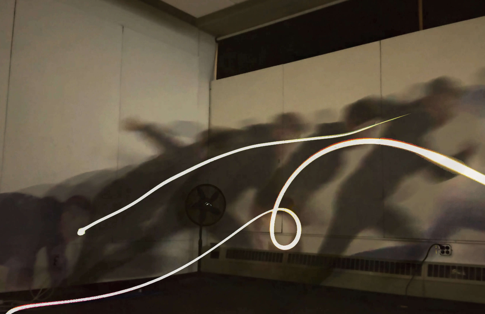
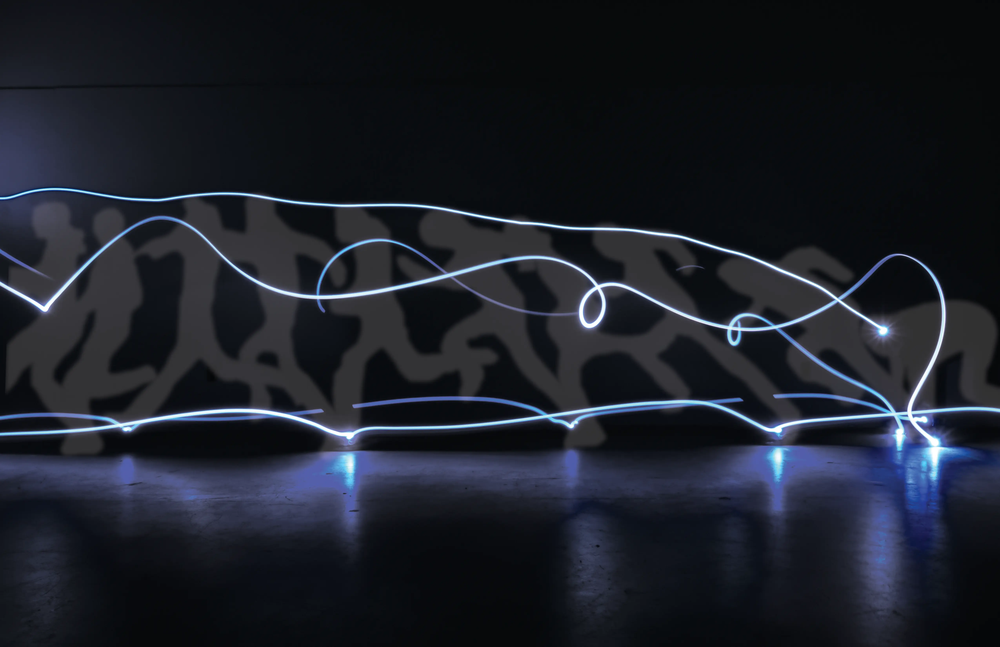
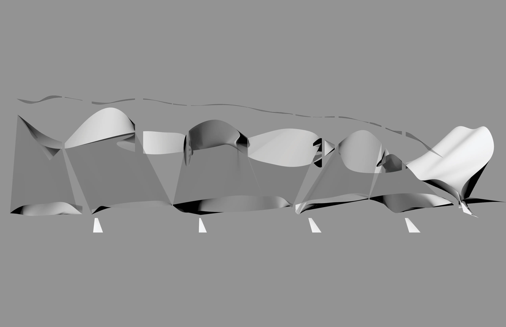

Diagraming Motion
Spring 2026Dissecting the motion of running

The Running Diagram
To capture a complex motion that occurs over time into a still diagram, long-exposure light tracing and rotoscoping were used to track the motion of feet, hands, and the head as one sprints from a block start. After capturing the motion, it was be diagrammed by revealing attributes such as speed, stride length, and trail identity (which trail corresponded to which part). Finally, the diagram was abstracted by distorting the curves corresponding to the time during which the point was recorded and by lofting between these curves.



